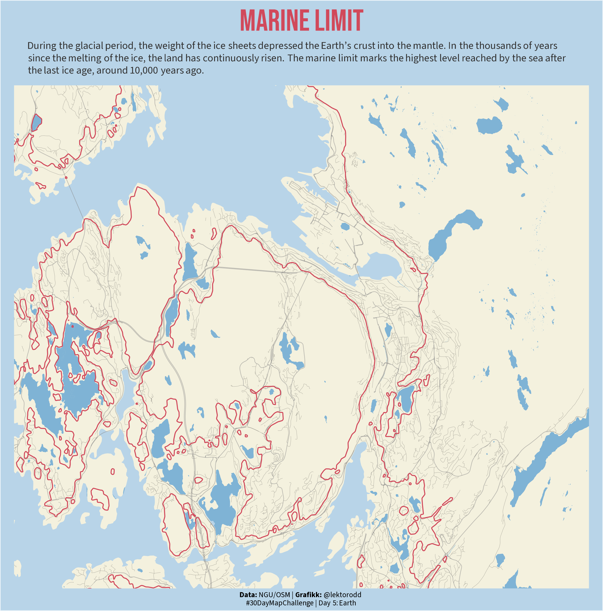
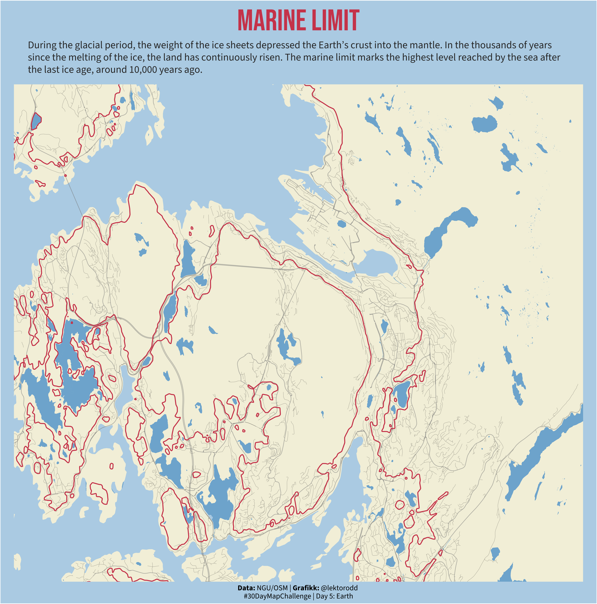

library(sf)
library(sfarrow)
library(here)
library(ggplot2)
library(dplyr)
library(osmdata)
library(showtext)
library(ggtext)Day 5 - Earth
#30DayMapChallenge 2025
R
code
maps
2025
Trying some geological data today.

TipLibraries used
Data
bergen <- st_read_parquet(here("data", "Kommuner.parquet"))|>
filter(navn %in% c("Bergen", "Askøy", "Øygarden", "Bjørnafjorden")) |>
st_set_crs(25833) |>
st_transform(4326)# lines
mg_data <- st_read(here("data", "geologi", "MarinGrense", "MarinGrense_20240123.shp")) |>
st_transform(4326)Reading layer `MarinGrense_20240123' from data source
`/Users/torodd/GitHub/dataviz/data/geologi/MarinGrense/MarinGrense_20240123.shp'
using driver `ESRI Shapefile'
Simple feature collection with 47370 features and 5 fields
Geometry type: MULTILINESTRING
Dimension: XY
Bounding box: xmin: -86899.94 ymin: 6439782 xmax: 1130125 ymax: 7950261
Projected CRS: ETRS89 / UTM zone 33Ncoast <- readRDS(here("data", "osm", "coastline_bergen.rds"))
water <- readRDS(here("data", "osm", "water_bergen.rds"))
major_streets <- readRDS(here("data", "osm", "major_streets_bergen.rds"))
minor_streets <- readRDS(here("data", "osm", "minor_streets_bergen.rds"))
bbox_area <- st_bbox(c(xmin=5.20, ymin=60.32, xmax=5.42, ymax=60.415), crs = st_crs(4326))Map
# color
sea_color <- "#B8D4E8"
land_color <- "#F4F1DE"
water_color <- "#7FB3D5"
road_major_color <- "#848484ff"
road_minor_color <- "#373636ff"
highlight_color <- "#D1495Bff"
# text
title <- "Marine Limit"
subtitle <- "During the glacial period, the weight of the ice sheets depressed the Earth's crust into the mantle. In the thousands of years since the melting of the ice, the land has continuously risen. The marine limit marks the highest level reached by the sea after the last ice age, around 10,000 years ago."
caption <- "**Data:** NGU/OSM | **Grafikk:** @lektorodd <br>#30DayMapChallenge | Day 5: Earth"
# fonts
font_add_google("Source Sans 3", "sourcesans")
font_add_google("Bebas Neue", "bebas")
showtext_auto()
showtext_opts(dpi = 300)
map_plot <- ggplot() +
geom_sf(data = bergen, fill = land_color, color = NA) +
geom_sf(data = water$osm_polygons, fill = water_color, color = NA, size = 0.1) +
geom_sf(data = water$osm_multipolygons, fill = water_color, color = NA, size = 0.1) +
geom_sf(data = major_streets$osm_lines, color = road_major_color, size = 0.3, alpha = 0.5) +
geom_sf(data = minor_streets$osm_lines, color = road_minor_color, size = 0.1, alpha = 0.5) +
geom_sf(data = mg_data, color = highlight_color) +
coord_sf(xlim = c(bbox_area$xmin, bbox_area$xmax), ylim = c(bbox_area$ymin, bbox_area$ymax)) +
labs(
title = title,
subtitle = subtitle,
caption = caption
) +
theme(
panel.background = element_rect(fill = sea_color),
plot.background = element_rect(fill = sea_color),
panel.grid = element_blank(),
axis.title = element_blank(),
axis.text = element_blank(),
axis.ticks = element_blank(),
plot.margin = margin(0, 15, 0, 15),
plot.title = element_text(
family = "bebas",
size = 32,
face = "bold",
color = highlight_color,
hjust = 0.5,
margin = margin(b = 10, t = 10)
),
plot.subtitle = element_textbox_simple(
family = "sourcesans",
size =,
color = "#333333",
hjust = 0.5,
margin = margin(b = 10, l = 15, r = 15)
),
plot.caption = element_markdown(
family = "sourcesans",
size = 8,
hjust = 0.5,
lineheight = 1.1,
margin = margin(t = 4, b = 4)
)
)
map_plot